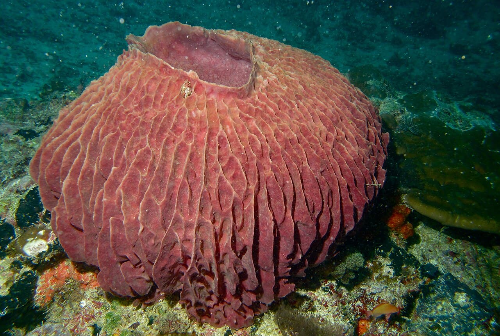

Sipadan
Bornéo, Malaisie · plongée, snorkeling

Île volcanique cernée d'un tombant vertigineux, célèbre pour ses tornades de barracudas et ses tortues vertes.
- Lieu
- Bornéo, Malaisie
- Niveau
- Intermédiaire
- Activités
- plongée, snorkeling
- Type d'eau
- Mer / océan
- Coordonnées
- 4.12, 118.63 (position approximative du secteur)
Dangers à connaître
- Courants forts le long du tombant.
- Faune protégée : ne rien toucher.
Le conseil d'Ocean Buddy
Permis d'accès limité chaque jour : réserve bien à l'avance.
Ouvrir dans Ocean Buddy Télécharger sur l'App Store
Source : Description historique Ocean Buddy · vérification externe en attente.